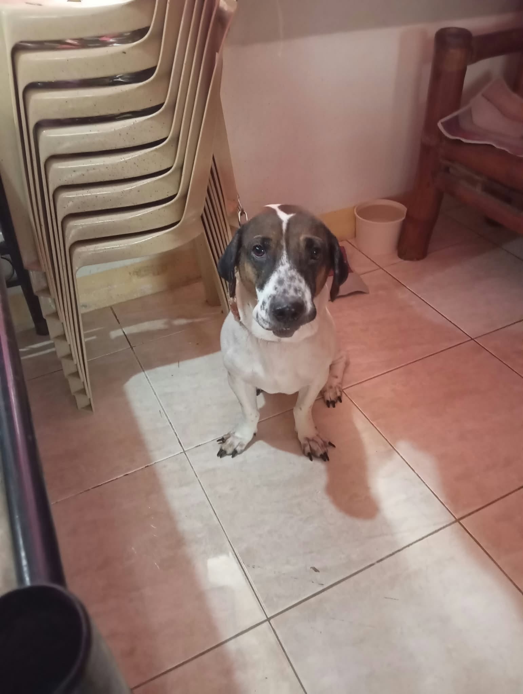
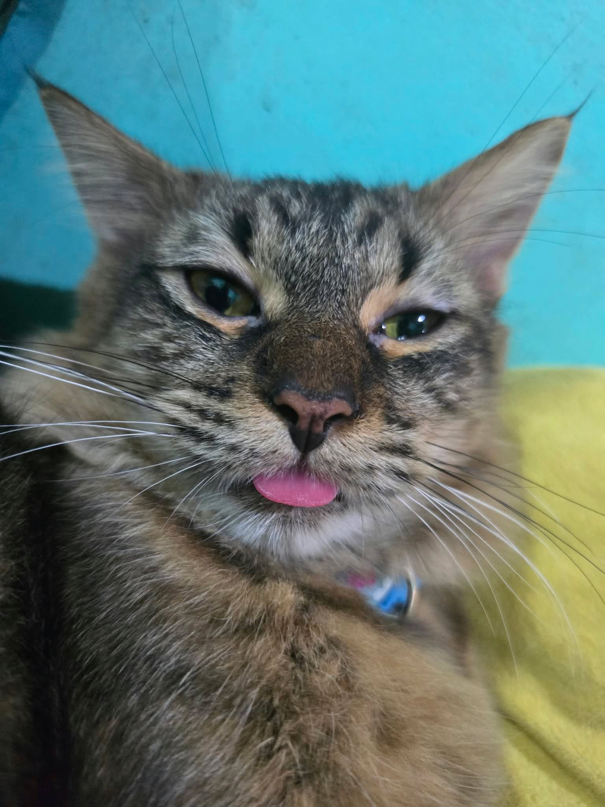

Attribute matching
Lost and found reports are compared by species, breed, color, size and markings.





TunTon connects pet owners and finders across Dagupan City in one place.
Post a lost or found pet with its photo, breed, color and markings. TunTon compares reports and alerts you when a likely match appears near you.
Dagupan City
Breed, color, size and markings
Only for reports inside your area
Lost and found reports are compared by species, breed, color, size and markings.
Draw a zone around where your pet went missing. Reports inside it are prioritized.
Get notified the moment a possible match is posted.